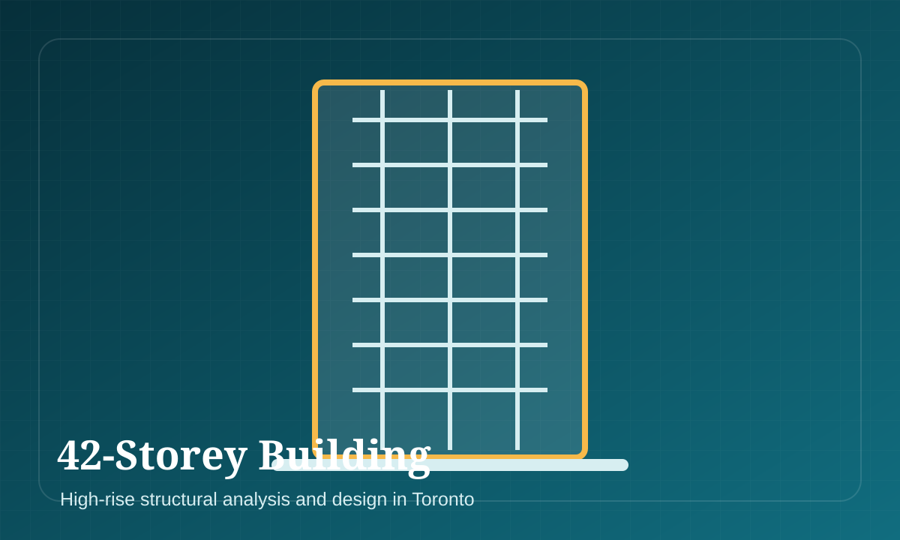

42-Storey Building, Toronto
Structural analysis and design contribution for a major high-rise building in Toronto.
Buildings42-Storey Building, Toronto
High-rise structural modelling, lateral-system evaluation and design coordination.
Category: Buildings